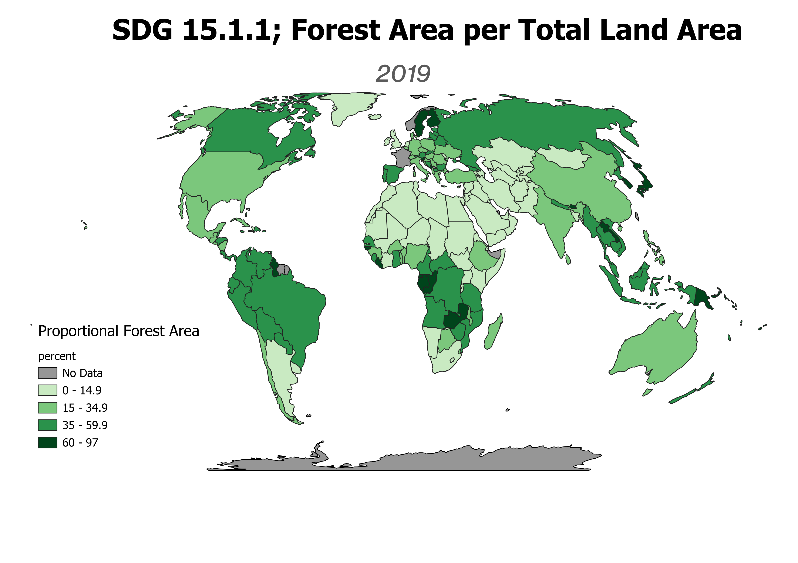
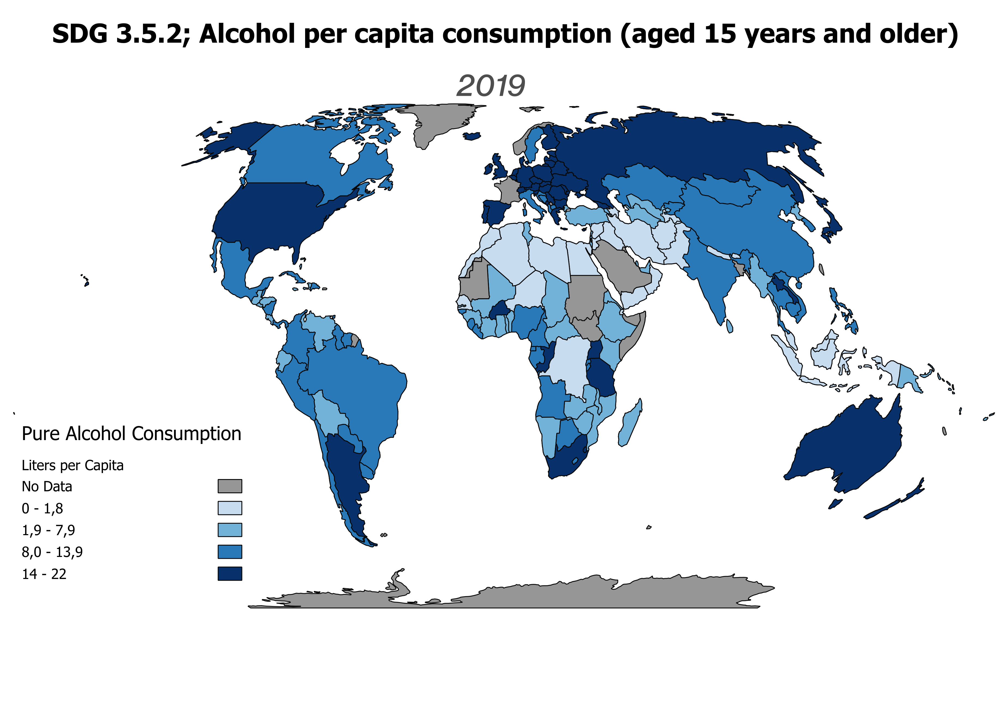

Choropleth Map

Two sustainable development goal (SDG) indicators are mapped in comparable choropleth maps below. The state of all SDGs are quantified with the use of indicators, for some of which the UN has made public data available on an open SDG Data Hub. Presenting the state of the UN Sustainable Development Goals on a global map allows for comparison of the realization of these goals in countries worldwide.
This Web-App shows two SDG indicators, comparable through a sliding window. The legend for both indicators can be accessed in the top right corner. The first is indicator 15.1.1 that stands for forest area as a proportion of total land area (percent), which is an indicator for SDG 15: Life on Land. The second stands for alcohol per capita consumption (aged 15 years and older) within a calendar year in litres of pure alcohol, which is an indicator for SDG 3: Good Health and Wellbeing.
Choropleth Maps
Both indicators are depicted on a choropleth map that shades areas based on quantitative data. In this kind of map, areas are thus ordered in a colour gradient colour scheme based on their attribute data. Data used for choropleth maps has to be normalized to enable fair comparison across regions of different geographical/ population size.
 Map Production
For the production of these choropleth maps I used QGIS. In this programme, I was able to join political boundaries data and UN indicator data to assign indicator values to each country. I then did some minor data cleaning by removing all unnecessary data attributes. Next, I changed the map symbology so that the countries where ordered in a graduated colour scheme according to indicator value data. Finally, I decided on appropriate class breaks. As can be seen in the maps above, I decided for a quantile distribution for the alcohol indicator, with every class containing an equal number of countries, and decided for arithmetic class breaks for the forest indicator that effectively improved representation for the skewed nature of the data set.